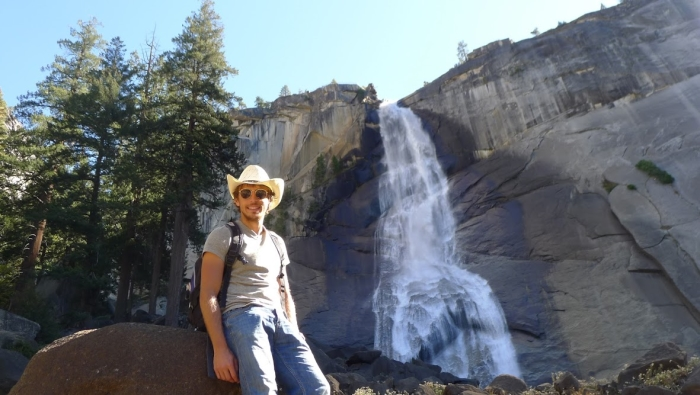

South by South West : à l'assaut de la Californie et fin du road trip !
Ca y est nous avons atteint la ville de Phoenix en Arizona, ultime étape de notre road trip en Amérique du Nord !! Le premier sentiment qui domine c'est la fierté d'avoir accompli l'objectif qu'on s'était fixé ! Partis d'Alaska le 25 août dernier, on aura réussi à y acheter une voiture et à conduire sur plus de 15,000 kms (presque) sans encombre jusqu'ici ! Des forêts enneigées de bouleaux et de sapins du Grand Nord, aux déserts de cactus du Sud Ouest des US on a encore du mal à réaliser le chemin parcouru. Mais revenons là où on vous avait laissé il y a 3 semaines : à l'entrée de Las Vegas !
Le récapitulatif de notre itinéraire à travers l'Amérique du Nord
Las Vegas, une ville au milieu du désert
Disons le tout de suite, malgré l'aberration écologique qu'elle représente, il faut reconnaître que la ville vaut le détour. Les différents hôtels et casinos de la ville ont chacun choisi un thème autour duquel développer leur image, et en général ils ne font pas les choses à moitié. Vous pouvez donc en quelques pas vous retrouver plongé dans l'univers de la Rome Antique dans le Caesar Palace, puis traverser la route pour découvrir l'ambiance égyptienne du Luxor avant de vous rendre au coeur de New York dans le New York New York. Personnellement j'ai beaucoup aimé le parcours en gondole à l'intérieur du Venezia, le show des fontaines du Bellagio et me balader sous la Tour Eiffel devant le Paris. L'ensemble de ces casinos à thème côte à côte donne véritablement l'impression de se balader dans un parc d'attraction pour adulte. Enfin bon n'ayant pas vraiment d'argent à dépenser dans les casinos de la ville on en a tout de même vite fait le tour et on est content de reprendre la route au bout de 2 jours.
Malgré le divertissement qu'ils procurent les casinos, les hôtels, les piscines et autres fontaines nous laissent un arrière goût amer. Immédiatement après avoir quitté Las Vegas on retombe dans le désert et on se repose la question de l'emplacement de cette ville à un tel endroit. On aura l'occasion de revenir sur la question dans notre prochain article d'étude de l'eau douce à paraître prochainement.
Paris by Night in Las Vegas
Les fontaines du Bellagio, un show aquatique... en plein milieu du désert!
California Dreamin
Nous laissons Las Vegas et le Nevada derrière nous et nous entrons enfin en Californie ! Mais pour notre entrée une épreuve terrible nous attend : traverser la Vallée de la Mort ! La Vallée porte bien son nom. Même fin octobre il y règne une chaleur étouffante et on ne peut qu'imaginer la détresse des premiers pionniers américains à l'avoir traversée. Pas sûr qu'à l'époque la climatisation existait sur les chevaux...
Le soleil tape fort sur Death Valley, même en octobre
Au bout de la vallée nous attendent les montagnes de la Sierra Nevada. On continue notre tour de l'Etat par un passage à Mono Lake, superbe lac qui avait inspiré les Pink Floyd pour une couverture d'album en leur temps. Antoine, grand fan du groupe, est en transe :) Puis on enchaîne avec le fameux Parc de Yosemite. Encore une fois la réputation du Parc est à la hauteur des paysages que nous voyons. Les immenses blocs rocheux qui nous surplombent se découpent avec netteté sur l'horizon. Le temps est au beau fixe et on en profite pour camper dans le Parc et faire une belle rando
Antoine rend hommage aux Pink Floyd à Mono Lake
Les blocs rocheux caractéristiques de Yosemite

Rando jusqu'à Nevada Fall
Going to San Francisco
Puis après un court passage à Sacramento où nous bénéficions de l'hospitalité de Phil & Camille nous arrivons enfin à San Francisco. Nous entrons dans la ville par le Golden Gate et allons rejoindre directement Nicolas, un ami d'Hec qui nous héberge généreusement le temps de notre séjour. Nicolas faisait de l'impro avec moi à Hec et est actuellement en stage à San Francisco et c'est un plaisir de le retrouver à l'autre bout du monde :) Nicolas est la première personne "connue" que nous retrouvons sur notre chemin depuis notre départ et San Francisco sera d'ailleurs l'occasion de retrouver plein d'amis que nous avions laissé en France. Je retrouve ainsi Constance, une amie de Grandchamp, Marina et Hélène deux amies d'hec en stage à SF, Svenia et Audrey, deux autres amies d'Hec qui ont aussi pris une deuxième année de césure pour partir explorer le monde. Antoine qui a passé 3 mois dans la ville au début de l'année retrouve aussi ses amis et ses anciens collègues, ainsi que les lieux qu'il aimait fréquenter durant son séjour ici...
Bref on passe 5 jours incroyables entre visites de la ville, retrouvailles et soirées entre amis. On profite notamment d'Halloween aux US, avec des gens déguisés partout dans la ville. L'ambiance est super sympa et ça nous change un peu de ce qu'on avait vécu jusque là.

Le fameux Golden Gate
Avec Constance, vue sur la baie de San Francisco depuis l'île d'Alcatraz
On ressort nos tenues de cowboy pour Halloween
On our way to LA
La suite du programme n'est pas moins excitante! On prend la fameuse "Pacific Highway" pour longer la côte californienne jusqu'à Los Angeles. Huit heures de route séparent les deux villes en suivant la côte mais cela vaut le détour! Les plages plus belles les unes que les autres se succèdent à chaque virage et on a même la chance de croiser un immense troupeau d'éléphants de mer sur l'une d'entre elles !
A Pebble Beach, sur la côte californienne, on emmène Spinoza voir la mer pour la première fois
Probablement une des plus belles routes de notre road trip
Une plage envahie par les éléphants de mer !
On arrive finalement à Los Angeles où c'est une autre amie d'Hec qui nous accueille : Marine, en échange à l'université de USC. On passe 3 jours dans la ville, on découvre entre autres Hollywood, le parc Griffith et Venice Beach. Si on est très vite séduit par le climat et l'ambiance de la ville, on est aussi sidéré par son immensité. De nombreuses autoroutes traversent la cité et il faut en moyenne 40 minutes pour se rendre d'un point à l'autre de la ville... Pas évident d'y vivre au quotidien surtout si on n'a pas de voiture.
Avec Marine sur Venice Beach
LA, une ville qui s'étend à perte de vue
Surfin USA
On continue et on termine notre exploration de la Californie par un passage à San Diego où je retrouve un bon ami... d'Hec encore une fois :) Cette fois-ci c'est David qui nous accueille chez lui. David est un étudiant américain qui était en échange sur le campus il y a 2 ans. David aime le foot, est chef scout aux US et faisait de l'impro avec moi... avec autant de passions communes on ne pouvait que bien s'entendre et je suis super heureux de pouvoir lui rendre visite chez lui. D'autant plus qu'il nous a prévu un programme aux petits oignons pour nous faire découvrir sa région : balade à vélo autour de Mission Bay, foot sur Moon Beach au soleil couchant et... initiation au surf !! C'est une grande première pour moi et j'adore l'expérience. En plus les conditions sont idéales, il fait beau, les vagues ne sont pas trop grosses si bien qu'on arrive tous les deux à se mettre régulièrement debout sur la planche pour prendre les vagues.
Retrouvailles avec David sur les plages de San Diego
Séance d'initiation au surf !!
La fin du road trip
On quitte donc la Californie après San Diego. La région nous aura laissé un super souvenir. En tout cas c'est sûr que c'est une région où il fait bon vivre : on se promène encore en short et en Tshirt et on peut aller se baigner à la plage encore au mois de Novembre.
Il ne nous reste plus que deux étapes sur notre trajet. Nous nous rendons d'abord à Tucson en Arizona où nous rencontrons Chloé, une franco-américaine d'origine niçoise qui étudie les questions de l'eau dans la région. On vous en reparlera très bientôt. Chloé nous fait également découvrir la région avec notamment de magnifiques "forêts" de cactus. Et enfin Phoenix d'où nous vous écrivons cet article. On reste dans la ville jusqu'à lundi le temps de revendre notre voiture et de préparer nos articles et vidéo d'étude sur l'eau.
Les cactus recouvrent certaines parties de l'Arizona
Le road trip se termine donc; mais le voyage continue ! A partir de lundi nous serons à Mexico pour de nouvelles aventures :) :)
Allez vous avez tenu la lecture jusque là sans que je vous parle de Spinoza. Rassurez vous il est en pleine forme ! On vous laisse en juger par les photos et il est au centre du jeu de cette semaine. Spinoza a maintenant deux mois, mais à votre avis combien pèse-t-il ?
Indice : il a été nourri au lait pour bébé bison depuis que nous l'avons recueilli...
Rassurez vous Spinoza est en pleine forme
A votre avis combien pèse ce chaton de deux mois ?
Comme d'habitude envoyez vos réponses à contact@aquamerica.fr et tentez de gagner une dédicace sur notre page Facebook :)
Merci à tous de nous avoir lu jusque là, je vous dis à très vite !
Grégoire